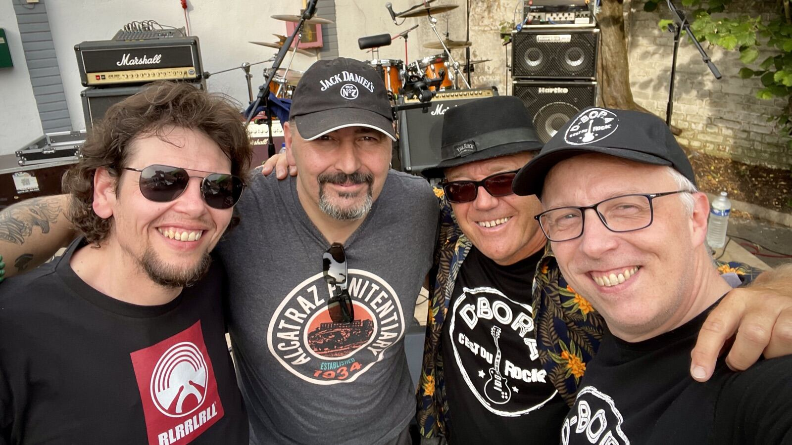
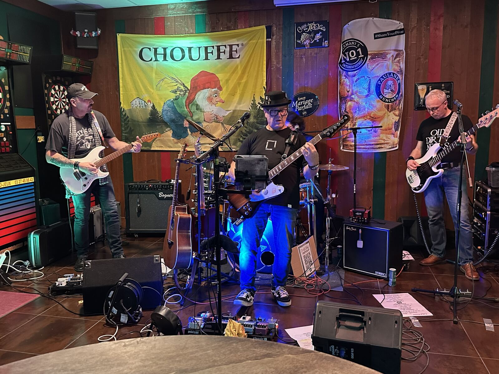

Le groupe
Du rock de compositions originales, sur les tumultes de l'existence et les passions déchaînées.
Le nom du groupe rend hommage à sa jeune bassiste, Déborah, disparue dans un accident de la route en 2020.
Fondé en 2012, véritablement actif depuis 2018, D-BORA joue sur la scène locale depuis 2021.
Lire les biographies
Sur scène
{% include upcoming_shows.html %} Voir les {{ site.data.past_liveshows.size }} concerts passés
En vidéo
Toutes les vidéos